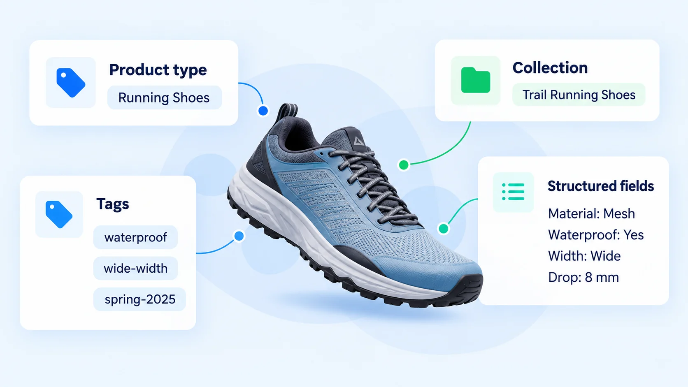

A catalog can look perfectly manageable at 30 products and become archaeological excavation at 300.
The problem usually is not that the store lacks organization. It is that organization evolved one decision at a time. Someone created a new product type. Someone else added three nearly identical tags. A seasonal collection became permanent. A metafield appeared because one product needed somewhere to put a specification.
Eventually, the same information exists in several places, names stop matching, and nobody is completely sure which field is supposed to do what. That is where product taxonomy earns its keep.
1. Product taxonomy is the structure behind your catalog.
Think of taxonomy as your store’s filing system plus vocabulary. It defines how products are named, grouped, described, filtered, and reused across the catalog.
| Catalog layer | Example |
|---|---|
| Product | Alpine Trail Runner |
| Product type | Running Shoes |
| Category | Shoes |
| Collection | Trail Running Shoes |
| Attribute | Waterproof |
| Attribute | Wide Width |
| Color | Slate Blue |
| Material | Mesh |
| Tag | spring-2027 |
Each layer describes the same product from a different angle. The trouble starts when one field is asked to do all of those jobs.
2. Start by defining what each field is responsible for.
Before renaming anything, establish the rules.
Product type
What is this product? Use a stable, recognizable identity such as Running Shoes, T-Shirts, Water Bottles, or Backpacks.
Structured fields
What is true about this product? Material, capacity, waterproofing, width, sleeve length, and other reusable details belong here when consistency matters.
Tags
What internal label helps us manage this product? Tags are useful for workflows, merchandising rules, temporary campaigns, automation, and internal grouping.
Collections
Which products should a shopper browse together? Collections are destinations such as Trail Running Shoes, Gifts Under $50, or Small-Space Furniture.
If you are still sorting out the difference between these tools, see Tags, Collections, and Product Types: What Each One Actually Does.
3. A real-world example: one product, many labels.
The same product can live in several parts of your taxonomy without those fields competing with each other.

4. Collections are destinations, not storage bins.
Collections answer a different question: which products should a shopper browse together?
That means a collection can support navigation, merchandising, campaigns, internal linking, and search landing pages. Your internal taxonomy should support those collections, not automatically dictate them.
Avoid creating separate collections for every filter combination. “Waterproof Trail Running Shoes,” “Wide Trail Running Shoes,” and “Women’s Waterproof Wide Trail Running Shoes” can quickly turn the catalog into collection soup.
Use one meaningful collection and let structured fields or filters handle the rest. For a deeper explanation, see How Collections Can Become Search Landing Pages.
5. Use one canonical name for each concept.
If the concept is Crew Neck, decide that once. Avoid simultaneously using Crew, Crewneck, Crew Neck, Crew-Neck, and Standard Neck.
The same rule applies to product types, colors, materials, sizes, vendors, attributes, and tags. Consistent vocabulary makes filtering, reporting, automation, content generation, and QA dramatically easier.
6. Decide which information deserves structure.
Not every detail needs its own field. Use structure when a detail needs to be reused consistently.
| Ask | If yes... |
|---|---|
| Will shoppers filter by it? | Structure it |
| Will it appear across many products? | Structure it |
| Does it need consistent formatting? | Structure it |
| Will automation use it? | Structure it |
| Will you report on it? | Structure it |
| Is it unique narrative context? | Keep it in copy |
For a water bottle, capacity probably deserves structure. A sentence explaining where or why someone might use it belongs in the description.
7. Audit the taxonomy before adding more products.
You do not need to rebuild the catalog immediately. Start with an inventory and look for duplicate product types, near-identical tags, inconsistent capitalization, attributes buried only in descriptions, redundant collections, inconsistent vendor names, and one-off metafields.
Then group the issues into three buckets:
Keep
The field already has a clear role and consistent values.
Normalize
The field is useful, but its values need cleanup or standardization.
Retire or migrate
The field duplicates another source of truth or no longer serves a useful purpose.
Document
Write the naming rule down so the same inconsistency does not return next month.
8. Good taxonomy makes everything downstream easier.
The benefit is not a prettier backend. A cleaner product taxonomy can make it easier to build useful collections, maintain filters, generate consistent product content, create internal links, improve product discovery, standardize merchandising, automate workflows, audit listings, and manage multiple stores.
The taxonomy is the skeleton. Customers may never see most of it, but they notice when the catalog has no bones.
Where penstack fits in
penstack works best when product information has clear roles. When your Shopify catalog distinguishes product identity, structured attributes, collection context, and supporting product details, penstack has cleaner source material to work from when creating and refreshing product content.
The goal is not to create more fields. It is to give the right information the right home.
The takeaway
A scalable product taxonomy is less about adding organization and more about removing ambiguity. Define what each field does. Standardize the vocabulary. Keep shopper destinations separate from internal labels. Structure information that needs to be reused.
Make your catalog rules useful in each listing.
Clear product types, tags, and collections give the next content update a better foundation. See how to carry that context into reviewed product details.